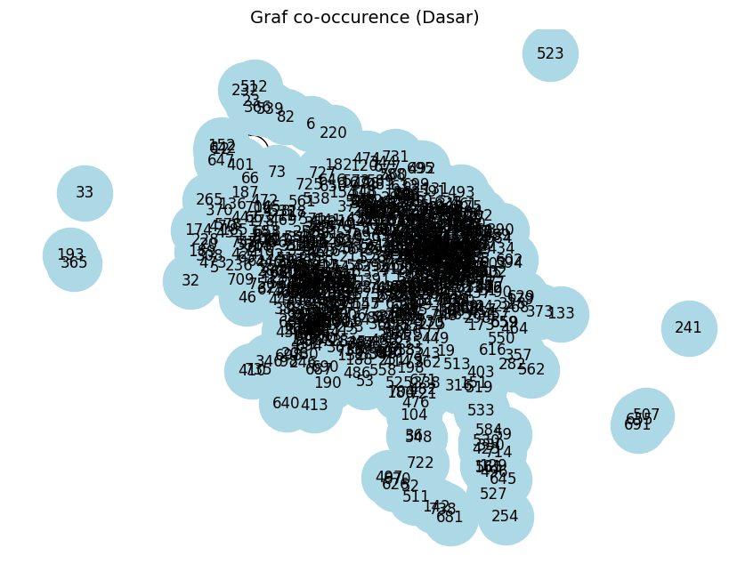

pip install --upgrade pymupdf
Collecting pymupdf
Downloading pymupdf-1.26.6-cp310-abi3-manylinux_2_28_x86_64.whl.metadata (3.4 kB)
Downloading pymupdf-1.26.6-cp310-abi3-manylinux_2_28_x86_64.whl (24.1 MB)
━━━━━━━━━━━━━━━━━━━━━━━━━━━━━━━━━━━━━━━━ 24.1/24.1 MB 39.6 MB/s eta 0:00:00
?25hInstalling collected packages: pymupdf
Successfully installed pymupdf-1.26.6
import pymupdf
doc = pymupdf.open("rekom.pdf") # open a document
out = open("output.txt", "wb") # create a text output
for page in doc: # iterate the document pages
text = page.get_text().encode("utf8") # get plain text (is in UTF-8)
out.write(text) # write text of page
out.write(bytes((12,))) # write page delimiter (form feed 0x0C)
out.close()
%%capture
!pip install nltk
import nltk
nltk.download('punkt') # hanya perlu sekali
nltk.download('punkt_tab') # opsional, untuk versi terbaru NLTK (≥3.8.2)
[nltk_data] Downloading package punkt to /root/nltk_data...
[nltk_data] Unzipping tokenizers/punkt.zip.
[nltk_data] Downloading package punkt_tab to /root/nltk_data...
[nltk_data] Unzipping tokenizers/punkt_tab.zip.
True
with open('output.txt', 'r', encoding='utf-8') as file:
teks = file.read()
print(teks[:200]) # tampilkan 200 karakter pertama
ISSN : 2355-9365
e-Proceeding of Engineering : Vol.11, No.4 Agustus 2024 | Page 5034
Sistem Pemberi Rekomendasi Pakaian
Menggunakan Metode Content-Based
Filtering
1st Ridho Bagus Ekasanjaya
Fa
# Install: pip install nltk
import nltk
#text = "Ini adalah kalimat pertama. Ini kalimat kedua? Ya!"
sentences = nltk.sent_tokenize(teks)
print(sentences)
# Output: ['Ini adalah kalimat pertama.', 'Ini kalimat kedua?', 'Ya!']
['ISSN : 2355-9365\ne-Proceeding of Engineering : Vol.11, No.4 Agustus 2024 | Page 5034\n \nSistem Pemberi Rekomendasi Pakaian \nMenggunakan Metode Content-Based \nFiltering \n \n1st Ridho Bagus Ekasanjaya \nFakultas Informatika \nUniversitas Telkom \nBandung, Indonesia \nridhoekasanjaya@student.telkomuniversity.ac.id \n2nd Agung Toto Wibowo \nFakultas Informatika \nUniversitas Telkom \nBandung, Indonesia \nagungtoto@telkomuniversity.ac.id \n \n \nAbstrak \n- \nPakaian \nmerupakan \nsuatu \nyang \nmenunjukan suatu identitas seseorang.', 'Melalui pakaian \nseseorang dapat menilai suatu kepribadian, iman, \nprofesi dan status sosial.', 'Perkembangan teknologi \nmenyebabkan \nmudahnya \nsuatu \ninformasi \ntidak \nterkecuali informasi mengenai trend pakaian.', 'Hal \ntersebut menyebabkan banyaknya desain pakaian \nsehingga mempersulit memilih mana pakaian yang \nsesuai untuk konsumen.', 'Oleh karena itu dibangun suatu \nsistem yang mempermudah calon konsumen untuk \nmemilih \npakaian.', 'Sistem \nrekomendasi \npakaian \nmenggunakan metode content-based filtering akan \nmembantu calon konsumen untuk memilih pakaian yang \nsesuai berdasarkan yang disukai oleh pengguna.', 'Kata Kunci - Sistem rekomendasi; Content-based \nfiltering; Pakaian \n \nI. \nPENDAHULUAN \n \nIndustri pakaian adalah salah satu industri yang \nbesar di seluruh dunia.', 'Salah satu hal yang tetap \nkonstan sepanjang peradaban manusia adalah manusia \nyang menutupi tubuhnya dengan selembar kain.', 'Awalnya, kain ini dipakai sebagai pelindung dari \nkerasnya iklim pada zaman tersebut.', 'Kemudian, ketika \nkita manusia belajar untuk menjaga diri kita sendiri \ndari iklim yang tak kenal ampun, kain itu mulai \nmelayani tujuan yang berbeda.', 'Fashion akhir-akhir ini \nmenampilkan individualitas orang tersebut [1].', 'Pada saat ini, pesatnya pertumbuhan industri \npakaian berkontribusi pada desain pakaian yang \nkompleks dan besar.', 'Terlalu banyak informasi tentang \ndesain pakaian menyebabkan dilema memilih pakaian \nyang berbeda saat konsumen berbelanja di toko \npakaian atau situs web.', 'Oleh karena itu, perlu untuk \nmenerapkan cara otomatis dan efisien untuk \nmenyaring informasi sehingga konsumen dapat \nmembeli pakaian yang sesuai dengan lebih mudah [4].', 'Sistem rekomendasi dapat membantu pengguna \nuntuk menemukan item yang relevan dengan minat \nmereka dengan memanfaatkan sejumlah besar \ninformasi produk dan sinyal pengguna seperti \ntampilan produk, item yang diikuti atau diabaikan, \npembelian atau kunjungan halaman web untuk \nmenentukan bagaimana, kapan, dan apa yang harus \ndirekomendasikan kepada pelanggan mereka.', 'Selain \nmemungkinkan rekomendasi yang disesuaikan agar \nsesuai dengan keranjang belanja atau lemari pakaian \npelanggan yang ada, kumpulan data ini membantu \nmengungkap wawasan lain yang berguna untuk sistem \npemberi rekomendasi, seperti struktur gaya busana, \npreferensi kelompok sosial, atau evolusi tren lintas \nwaktu dan lokasi.', '[5] \nSistem rekomendasi pakaian dapat didefinisikan \nsebagai sarana pencocokan fitur antara produk fashion \ndan pengguna atau konsumen di bawah kriteria \npencocokan tertentu.', 'Profil pengguna yang terdefinisi \ndengan baik dapat membedakan sistem rekomendasi \nyang lebih personal atau disesuaikan dari sistem \nkonvensional.', '[3] \nSalah satu pendekatan yang digunakan dalam \nsistem rekomendasi yaitu content-based filtering yang \nartinya pemfilteran berbasis konten dimana sistem ini \nmemberikan rekomendasi untuk menebak apa yang \ndisukai atau sesuai dengan pengguna berdasarkan \naktivitas \npengguna \ntersebut.', 'Dalam \nsistem \nrekomendasi pakaian menggunakan metode content-\nbased filtering akan memberikan rekomendasi \nberdasarkan atribut dari produk yang disukai oleh \nkonsumen seperti warna pakaian dan model pakaian.', 'II.', 'KAJIAN TEORI \n \nA. Sistem Rekomendasi \nSistem rekomendasi adalah suatu sistem yang \ndigunakan oleh pengguna untuk mendapatkan produk \nyang diinginkan.', 'Tujuan dari sistem rekomendasi \nadalah untuk meningkatkan penjualan dengan cara \nmerekomendasikan \nproduk-produk \nyang \nsesuai \ndengan pengguna atau konsumen.', 'Konsep sistem \nrekomendasi telah banyak digunakan secara luas oleh \n\x0cISSN : 2355-9365\ne-Proceeding of Engineering : Vol.11, No.4 Agustus 2024 | Page 5035\n \nhampir seluruh sektor bisnis dimana seorang \nkonsumen memerlukan informasi untuk membuat \nsuatu keputusan [8].', 'Sebuah \nsistem \nrekomendasi \nharus \ndapat \nmembangun dan memelihara user model atau user \nprofile yang berisi ketertarikan pengguna.', 'Sebagai \ncontoh, pada sebuah toko buku, sistem menyimpan \nbuku apa saja yang pengunjung lihat atau beli di masa \nlalu.', 'Hal ini untuk memprediksi buku-buku lainnya \nyang mungkin diminati oleh pengunjung [12].', 'Sistem rekomendasi memiliki beberapa metode \nyang umum digunakan yaitu, content-based filtering, \ncollaborative filtering (User-based filtering dan Item-\nbased \nfiltering) \ndan hybrid \nyang \nmerupakan \npenggabungan dari kedua metode tersebut.', 'Pada \ncollaborative filtering, metode dibagi lagi menjadi dua \nyaitu user-based yang mana pengguna memainkan \nperan penting dan item-based yang mana item yang \nlebih memainkan peran penting [11].', 'B. Content-Based Filtering \nContent-based filtering adalah salah satu metode \nyang biasa digunakan pada sistem rekomendasi.', 'Metode ini menggunakan kata kunci dan atribut yang \nditetapkan \npada \nobjek \ndalam \ndatabase \ndan \nmencocokan \ndengan \npengguna.', 'Metode \nini \nmemanfaatkan content tertentu untuk membuat sistem \nrekomendasi produk yang serupa atau mirip kepada \npengguna.', 'Sistem \nrekomendasi \ncontent-based \nmerekomendasikan item yang mirip dengan yang \ndisukai pengguna sebelumnya.', 'Nilai kesamaan antar \nitem dihitung berdasarkan fitur yang ada pada setiap \nkonten [13].', 'Metode ini bersifat user independence, tidak \nbergantung pada situasi apakah item tersebut \nmerupakan item baru (yang belum pernah dipilih oleh \npengguna manapun) maupun bukan item baru.', 'Jika \nseorang pengguna telah memesan suatu menu \nhidangan pada kategori tertentu maka sistem akan \nmencoba merekomendasikan menu hidangan dengan \nkategori serupa yang juga tersedia di restoran lain \nyang mungkin akan disukai juga oleh pengguna \ntersebut [16].', 'C. TF-IDF \nTerm Frequency-Inverse Document Frequency \nadalah ukuran yang menggambarkan pentingnya suatu \nistilah terhadap suatu dokumen dalam sebuah \nkumpulan atau korpus.', 'Untuk mendapatkan TF, \ndibutuhkan beberapa istilah yang sering muncul pada \nsuatu dokumen.', 'TF-IDF akan membentuk suatu profil pengguna \nberdasarkan bobot vector komponen suatu item.', 'TF \nmerupakan jumlah term pada suatu dokumen.', 'IDF \nadalah untuk menghitung seberapa pentingnya sebuah \nkata.', 'Perhitungan \nTF-IDF \nbertujuan \nuntuk \nmemberikan bobot nilai pada sebuah kata yang dilihat \ndari seberapa sering kata tersebut muncul didalam \nsuatu dokumen.', 'Berikut rumus TF-IDF: \nTF −IDF = �㕇�㔹(þ, þ) ∗�㔼�㔷�㔹(þ) \n(1) \nKeterangan: \n�㕇�㔹(þ, þ) = hitungan jumlah t muncul pada d \n�㔼�㔷�㔹(þ) = kemunculan t dalam dokumen \n \nD. Consine Similarity \nConsine \nsimilarity \nberfungsi \nuntuk \nmembandingkan kemiripan antar dokumen.', 'Consine \nsimilarity menghitung vektor yang terkait antara satu \ndengan yang lain.', 'Nilai similarity yang dihasilkan \nadalah antara nilai 0 dan nilai 1.', 'Nilai 0 menandakan \nuser profile dan item sangat tidak relevan sedangkan \nnilai 1 adalah sebaliknya.', '[10].', 'Berikut persamaan \nConsine similarity: \ný�㕜ý�㔃=\ný .', 'þ\n(|ý| |þ|) \n \n(2) \nKeterangan: \nA = Vektor pertama \nB = Vektor kedua \n|A| = Panjang vektor A \n|B| = Panjang vektor B \n \nIII.', 'METODE \n \nA. Gambaran Umum Sistem \nContent-based \nfiltering \nadalah \nsalah \nsatu \npendekatan dalam implementasi sistem rekomendasi, \nyang fokus pada karakteristik atau "konten" dari item \nyang direkomendasikan dan preferensi pengguna.', 'Dalam konteks rekomendasi pakaian, content-based \nfiltering akan mempertimbangkan atribut-atribut \npakaian dan preferensi pengguna untuk menghasilkan \nrekomendasi yang sesuai.', 'GAMBAR 1 \nGambar Umum Sistem \n \nDalam pendekatan Content-Based Filtering yang \n\x0cISSN : 2355-9365\ne-Proceeding of Engineering : Vol.11, No.4 Agustus 2024 | Page 5036\n \ndijelaskan dalam rancangan, profil pengguna dilihat \nsebagai kumpulan kata kunci atau fitur yang \nmenggambarkan preferensi pengguna terhadap item-\nitem tertentu, dalam hal ini adalah pakaian.', 'Ini \nmemungkinkan \nsistem \nrekomendasi \nuntuk \nmengidentifikasi pakaian - pakaian yang memiliki \natribut atau fitur yang relevan dengan preferensi \npengguna.', 'Dalam contoh yang diberikan, kita memiliki User \nA sebagai pengguna utama dan pakaian dengan \nkategori tertentu.', 'Jika User A menyukai pakaian \ndengan kategori t-shirt (misalnya, pakaian A), sistem \nrekomendasi akan menggunakan konsep Content-\nBased Filtering untuk menanggapi preferensi ini.', 'Sistem akan mencari pakaian lain yang memiliki \nkategori yang sama dengan pakaian yang disukai oleh \npengguna, yaitu pakaian dengan kategori t-shirt.', 'Dalam kasus ini, jika kita memiliki pakaian D \ndengan kategori yang sama, yaitu t-shirt, maka sistem \nakan merekomendasikan pakaian D kepada User A. \nDengan kata lain, sistem ini bekerja dengan \nmengidentifikasi atribut atau fitur dari pakaian yang \ndisukai oleh pengguna (kategori t-shirt) dan mencari \npakaian lain yang memiliki atribut atau fitur yang \nserupa untuk direkomendasikan kepada pengguna.', 'B. Gambaran Alur Sistem \nRancangan alur sistem adalah panduan yang \nmenggambarkan langkah-langkah dan komponen-\nkomponen utama yang terlibat dalam implementasi \nsuatu sistem.', 'Dalam rancangan tersebut, alur kerja \nsistem dijelaskan dengan cara yang sistematis untuk \nmencapai tujuan yang diinginkan.', 'GAMBAR 2 \nAlur Perancangan Sistem \n \n \nPada tahap awal, penggunaan sistem dimulai \nketika seorang pengguna, misalnya "User A," \nberinteraksi dengan platform rekomendasi pakaian.', 'Pertama, sistem akan menerima input dari pengguna \nterkait preferensi pakaian yang mereka sukai.', 'Misalnya, jika User A menyukai pakaian dengan \nkategori t-shirt, ini akan menjadi informasi penting \ndalam membentuk profil preferensi pengguna.', 'Setelah \nmendapatkan \ninformasi \npreferensi \npengguna, sistem akan memproses data pakaian yang \ntersedia.', 'Ini melibatkan ekstraksi atribut-atribut \npenting dari setiap pakaian, seperti kategori, size, \nwarna dan atribut lainnya.', 'Atribut-atribut ini akan \nmembentuk representasi "konten" dari setiap pakaian \ndalam bentuk kata kunci atau fitur yang dapat \ndiidentifikasi oleh sistem.', 'Dengan informasi tentang preferensi pengguna \ndan representasi konten pakaian, sistem kemudian \nakan membangun profil pengguna.', 'Profil ini \nmencerminkan preferensi dan kesukaan pengguna \nterkait atribut-atribut pakaian seperti kategori.', 'Dalam \nkasus ini, profil User A akan mencakup preferensi \nkategori pakaian.', 'Setelah profil pengguna terbentuk, langkah \nselanjutnya adalah melakukan pencocokan antara \nprofil pengguna dan pakaian yang ada.', 'Sistem akan \n\x0cISSN : 2355-9365\ne-Proceeding of Engineering : Vol.11, No.4 Agustus 2024 | Page 5037\n \nmencari item pakaian dengan atribut-atribut yang \nsesuai dengan profil pengguna, seperti pakaian dengan \nkategori \nt-shirt.', 'Ini \ndapat \ndicapai \ndengan \nmenggunakan metrik kesamaan, seperti cosine \nsimilarity, untuk mengukur sejauh mana pakaian - \npakaian tersebut cocok dengan profil pengguna.', 'Ketika sistem telah mengidentifikasi pakaian - pakaian \nyang cocok dengan profil pengguna, pakaian - pakaian \ntersebut akan direkomendasikan kepada pengguna.', 'Dalam contoh ini, pakaian - pakaian dengan kategori \nt-shirt yang paling cocok dengan profil User A akan \ndianggap sebagai rekomendasi.', 'Pengguna akan \nmenerima rekomendasi ini dan dapat memutuskan \nuntuk membeli pakaian – pakaian tersebut.', 'Tahap akhir dari alur sistem melibatkan umpan \nbalik dari pengguna.', 'Jika pengguna memberikan \numpan balik positif atau negatif terhadap rekomendasi \nyang diberikan, informasi ini dapat digunakan untuk \nmeningkatkan sistem rekomendasi di masa depan.', 'Umpan balik ini dapat membantu sistem memahami \npreferensi \npengguna \ndengan \nlebih \nbaik \ndan \nmemberikan rekomendasi yang lebih akurat.', 'C. Pengambilan Data \n \nPada tahap ini, data pakaian diambil melalui \nkaggle yang terdiri atas 14330 row dengan sepuluh \natribut, yaitu p_id, name, price, colour, brand, img, \nratingCount, avg_rating, description, p_atributtes.', 'D. Preprocessing Data \nSebelum data digunakan, sebaiknya dilakukan \npreprocessing data agar data siap diolah dan \ndigunakan untuk kebutuhan analisis.', 'Pada tahap ini \ndilakukan case folding untuk mengubah seluruh huruf \nkapital menjadi huruf kecil, remove punctuation untuk \nmenghapus seluruh tanda baca pada yang tidak \nmemiliki arti dalam analisis teks, dan stopwords \nremoval yang berfungsi untuk menghapus kata-kata \nyang tidak memiliki makna yang akan mempengaruhi \nkeakuratan hasil analisis.', "TABEL 1 \nTabel Input dan Output Preprocessing \nInput \nOutput \nBlack printed Kurta with \nPalazzos with dupatta \n<br> <br> <b> Kurta \ndesign: </b> <ul> <li> \nEthnic motifs printed </li> \n<li> Anarkali shape </li> \n<li> Regular style </li> \n<li> Mandarin collar, \nthree-quarter regular \nsleeves </li> <li> Calf \nlength with flared hem \nblack printed \nkurta palazzos \ndupatta kurta \ndesign ethnic \nmotifs printed \nanarkali shape \nregular style \nmandarin collar \nthreequarter \nregular sleeves \ncalf length \n</li> <li> Viscose rayon \nmachine weave fabric \n</li> </ul> <br> <b> \nPalazzos design: </b> \n<ul> <li> Printed Palazzos \n</li> <li> Elasticated \nwaistband </li> <li> Slip-\non closure </li> \n</ul>Dupatta Length 2.43 \nmeters Width: 88 \ncm<br>The model (height \n5'8) is wearing a size \nS100% \nRayon<br>Machine wash \nflared hem \nviscose rayon \nmachine weave \nfabric palazzos \ndesign printed \npalazzos \nelasticated \nwaistband slipon \nclosure dupatta \nlength 243 \nmeters width 88 \ncm model height \n58 wearing size \ns100 rayon \nmachine wash \nOrange solid Kurta with \nPalazzos with \ndupatta<br><br><b>Kurta \ndesign: \n</b><ul><li>Solid</li><li\n>A-line \nshape</li><li>Regular \nstyle</li><li>Square neck, \nsleeveless shoulder \nstraps</li><li>Calf length \nwith straight \nhem</li><li>Viscose \nrayon machine weave \nfabric</li></ul><br><b>P\nalazzos design: \n</b><ul><li>Solid \nPalazzos</li><li>Elasticat\ned waistband</li><li>Zip \nclosure</li></ul><b>Dupa\ntta \nDesign:</b><ul><li>Flora\nl Printed</li></ul>Kurta \nFabric: Viscose \nrayon<br>Bottom \nFabric: Viscose \nrayon<br>Dupatta Fabric: \nOrganza<br>Hand \nwashThe model (height \n5'8) is wearing a size S \norange solid \nkurta palazzos \ndupatt kurta \ndesign solid \naline shape \nregular style \nsquare neck \nsleeveless \nshoulder straps \ncalf length \nstraight hem \nviscose rayon \nmachine weave \nfabric palazzos \ndesign solid \npalazzos \nelasticated \nwaistband zip \nclosure dupatta \ndesign floral \nprinted kurta \nfabric viscose \nrayon bottom \nfabric viscose \nrayon dupatta \nfabric organza \nhand washthe \nmodel height 58 \nwearing size \nBlack and green printed \nstraight kurta, has a nitched \nround neck, three-quarter \nsleeves, straight hem, side \nslitsMaterial: Cotton<br> \nMachine WashThe model \nblack \ngreen \nprinted straight \nkurta \nnitched \nround \nneck \nthreequarter \nsleeves straight \nhem \nside \n\x0cISSN : 2355-9365\ne-Proceeding of Engineering : Vol.11, No.4 Agustus 2024 | Page 5038\n \nslitsmaterial \ncotton machine \nwashthe model \nheight \n \nE. TF-IDF dan Consine Similarity \nSetelah data di preprocessing, data akan \ndilakukan pembobotan dengan proses TF-IDF dan \ncosine similarity untuk menghitung kesamaan antar \ndua buah objek.", 'Tahap awal pada proses TF-IDF yaitu \nmelakukan preprocessing dan tokenisasi yang berguna \nuntuk menghilangkan tanda baca, kata sambung dan \nimbuhan.', 'TABEL 2 \nTokenisasi \nD \nInput \nOutput \nD1 \nVero Moda Women Blue \nSweatshirt \nvero moda women \nblue sweatshirt \nD2 \nVero Moda Women Grey & \nGreen Colourblocked Sweatshirt \nvero moda women \ngrey green \ncolourblock \nsweatshirt \nD3 \nKazo Women Purple Sequin \nPrinted Sweatshirt \nkazo women \npurple sequin \nprinted sweatshirt \n \nSelanjutnya sistem melakukan proses TF-IDF \npada kata-kata pada tabel 3 menggunakan rumus yang \ndijelaskan sebelumnya.', 'Tujuannya untuk menghitung \nseberapa penting kata-kata tersebut muncul pada suatu \ndokumen.', 'TABEL 3 \n Proses TF-IDF \nToken \nTF \nd\nf \nD/\ndf \nID\nF \nTF-IDF \nD\n1 \nD\n2 \nD\n3 \nD1 \nD2 \nD3 \nVero \n1 \n1 \n0 \n2 \n1.', '5 \n0.1\n76 \n0.1\n76 \n0.1\n76 \n0 \nModa \n1 \n1 \n0 \n2 \n1.', '5 \n0.1\n76 \n0.1\n76 \n0.1\n76 \n0 \nWomen \n1 \n1 \n1 \n3 \n1 \n0 \n0 \n0 \n0 \nBlue \n1 \n0 \n0 \n1 \n3 \n0.4\n77 \n0.4\n77 \n0 \n0 \nSweats\nhirt \n1 \n1 \n1 \n3 \n1 \n0 \n0 \n0 \n0 \nGrey \n0 \n1 \n0 \n1 \n3 \n0.4\n77 \n0 \n0.4\n77 \n0 \ngreen \n0 \n1 \n0 \n1 \n3 \n0.4\n77 \n0 \n0.4\n77 \n0 \nColourb\nlock \n0 \n1 \n0 \n1 \n3 \n0.4\n77 \n0 \n0.4\n77 \n0 \nkazo \n0 \n0 \n1 \n1 \n3 \n0.4\n77 \n0 \n0 \n0.4\n77 \npurple \n0 \n0 \n1 \n1 \n3 \n0.4\n7 \n0 \n0 \n0.4\n7 \nSetelah mendapatkan nilai TF-IDF, proses \nselanjutnya mencari kesamaan antar dokumen \nmenggunakan consine similarity dengan menghitung \nvektor kemiripan antar dokumen.', 'Tabel 4 \nProses Consine Similarity \nKata \nD1 \nD2 \nD1 \n.', 'D2 \nD1 ^2 \nD2^2 \nVero \n0.176 \n0.176 \n0.0309 \n0.0309 \n0.0309 \nmoda \n0.176 \n0.176 \n0.0309 \n0.0309 \n0.0309 \nwomen \n0 \n0 \n0 \n0 \n0 \nBlue \n0.477 \n0 \n0 \n0.2275 \n0 \nsweatshirt \n0 \n0 \n0 \n0 \n0 \nGrey \n0 \n0.477 \n0 \n0 \n0.2275 \ngreen \n0 \n0.477 \n0 \n0 \n0.2275 \ncolourblock \n0 \n0.477 \n0 \n0 \n0.2275 \nkazo \n0 \n0 \n0 \n0 \n0 \npurple \n0 \n0 \n0 \n0 \n0 \nsequin \n0 \n0 \n0 \n0 \n0 \nprinted \n0 \n0 \n0 \n0 \n0 \ntotal \n0.0618 \n0.2893 \n0.7443 \n \nTABEL 5 \nProses Consine Similarity \nKata \nD1 \nD3 \nD1 .', 'D3 \nD1 ^2 \nD3^2 \nvero \n0.176 \n0 \n0 \n0.0309 \n0 \nmoda \n0.176 \n0 \n0 \n0.0309 \n0 \nwomen \n0 \n0 \n0 \n0 \n0 \nblue \n0.477 \n0 \n0 \n0.2275 \n0 \nsweatshirt \n0 \n0 \n0 \n0 \n0 \ngrey \n0 \n0 \n0 \n0 \n0 \ngreen \n0 \n0 \n0 \n0 \n0 \ncolourblock \n0 \n0 \n0 \n0 \n0 \nkazo \n0 \n0.477 \n0 \n0 \n0.2275 \npurple \n0 \n0.477 \n0 \n0 \n0.2275 \nsequin \n0 \n0.477 \n0 \n0 \n0.2275 \nprinted \n0 \n0.477 \n0 \n0 \n0.2275 \nTotal \n0 \n0.2893 \n0.91 \n \nTABEL 6 \n Proses Consine Similarity \nKata \nD2 \nD3 \nD2 \n.', 'D3 \nD2 ^2 \nD3^2 \nvero \n0.176 \n0 \n0 \n0.0309 \n0 \nmoda \n0.176 \n0 \n0 \n0.0309 \n0 \nwomen \n0 \n0 \n0 \n0 \n0 \nblue \n0 \n0 \n0 \n0 \n0 \nsweatshirt \n0 \n0 \n0 \n0 \n0 \ngrey \n0.477 \n0 \n0 \n0.2275 \n0 \ngreen \n0.477 \n0 \n0 \n0.2275 \n0 \ncolourblock \n0.477 \n0 \n0 \n0.2275 \n0 \nkazo \n0 \n0.477 \n0 \n0 \n0.2275 \npurple \n0 \n0.477 \n0 \n0 \n0.2275 \nsequin \n0 \n0.477 \n0 \n0 \n0.2275 \nprinted \n0 \n0.477 \n0 \n0 \n0.2275 \ntotal \n0 \n0.7449 \n0.91 \n \nBerdasarkan data diatas, sehingga diperoleh nilai \nconsine similarity sebagai berikut: \ný�㕜ý(�㔷1, �㔷2) =\n0.0618\n(0.2893 ∗0.7443) = 0.287 \ný�㕜ý(�㔷1, �㔷3) =\n0\n(0.2893 ∗0.91) = 0 \ný�㕜ý(�㔷2, �㔷3) =\n0\n(0.7443 ∗0.91) = 0 \nDengan hasil tersebut maka D1 dan D2 memiliki \nkemiripan, sedangkan kemiripan antara D1 dan D3 \nserta D2 dan D3 tidak memiliki kemiripan.', 'Nilai \nantara kedua vektor menunjukan nilai kesamaan \n\x0cISSN : 2355-9365\ne-Proceeding of Engineering : Vol.11, No.4 Agustus 2024 | Page 5039\n \n(similarity) dua buah dokumen yang Dimana nilai \nterbesar adalah 1 dan nilai terkecil adalah 0.', 'Nilai 0 \nmenandakan bahwa tidak ada kemiripan antara dua \ndokumen, sedangkan nilai 1 menandakan bahwa dua \nbuah dokumen mirip atau serupa.', 'Semakin mendekati \n1 maka semakin besar tingkat kemiripan kedua \ndokumen tersebut.', 'F. Modelling \nPada tahap pemodelan, peneliti membuat fungsi \nuntuk rekomendasi pakaian yang sama sesuai hasil \ndari TF-IDF dan cosine similarity yang dibuat.', 'Hasil \nyang akan ditampilkan berupa 10 urutan terdekat \ndengan \nnama \npakaian \nyang \nkita \ndefinisikan.', 'Penggunaan \nrecommendation \nsystem \ndengan \nmenggunakan metode Content based filtering dapat \nmenghasilkan nama - nama produk pakaian yang \nmemiliki kesamaan dari sisi deskripsi yang telah \nditampilkan pada dataset.', 'IV.', 'EVALUASI \n \nSistem \nPemberi \nRekomendasi \nPakaian \nMenggunakan Metode Content-Based Filtering yang \ntelah diimplementasikan memiliki tujuan untuk \nmemberikan rekomendasi pakaian kepada pengguna \nberdasarkan kemiripan karakteristik atau konten \ndengan pakaian yang telah mereka pilih.', 'Fungsi \nrecommendations dalam sistem ini mengambil nama \nsuatu produk sebagai input dan mengembalikan daftar \npakaian yang memiliki kesamaan karakteristik dengan \nproduk tersebut.', 'A. Hasil Pengujian \nPada penelitian ini, penulis melakukan percobaan \ndengan menggunakan tiga pengguna untuk melakukan \nujicoba terhadap sistem.', 'Pengguna akan diminta untuk \nmemasukan satu daftar pakaian lalu sistem akan \nmerekomendasikan 5 item pakaian.', 'TABEL 7 \nPengujian Rekomendasi Sistem \nId \nUser \nItem \nyang \ndicari \nHasil \nRekomendasi \n1 \nBella \nSoch \nGold-\nColoured \nEmbroidered \nBlouse \nSoch \nGold-\nColoured \nEmbroidered \nBlouse \nSoch \nWomen \nBlack \nSequin \nEmbellished \nNet \nSaree \nBlouse \nSALWAR \nSTUDIO \nWomen \nPink \nEmbroidered \nSilk Saree \nBlouse \nStudio \nShringaar \nWomen Maroon \nSolid \nSaree \nBlouse \nSoch \nRed \n& \nGolden Printed \nBrocade \nWeaving \nSilk \nSaree Blouse \n2 \nFebby \nFlaher \nWomen Blue \nSolid Art Silk \nPadded \nBlouse \nFlaher \nPink \nEmbellished \nVelvet Padded \nReadymade \nSaree Blouse \nStudio \nShringaar \nWomen Maroon \nSolid \nSaree \nBlouse \nURBANIC \nBlue & White \nSolid Pleated \nPlaysuit \nwith \nLace Inserts \nDarzi \nWomen \nGreen & Black \nStriped \nBasic \nJumpsuit \nflaher Women \nGreen & Off-\nWhite \nEmbroidered \nPadded \nSaree \nBlouse \n3 \nIndah \nVero Moda \nWomen Blue \nSweatshirt \n \nVero \nModa \nWomen Maroon \nPrinted \nSweatshirt \nKazo \nWomen \nPurple \nSequin \nPrinted \nSweatshirt \nURBANIC \nWomen Beige \nSolid \nButton \nPullover \nSweatshirt \nVero \nModa \nWomen Grey & \nGreen \nColourblocked \nSweatshirt \n\x0cISSN : 2355-9365\ne-Proceeding of Engineering : Vol.11, No.4 Agustus 2024 | Page 5040\n \nVero \nModa \nWomen \nGrey \nSweatshirt \n \nB. Analisis Hasil Pengujian \nBerdasarkan hasil pengujian didapatkan hasil top \n5 rekomendasi pakaian, responden akan menentukan \nitem mana saja yang dianggap relevan dan item yang \ntidak relevan.', 'Selanjutnya akan dihitung berapa persen \nhasil yang relevan setiap pengguna dan rata-rata dari \nketiga pengguna tersebut.', 'Pengguna dengan id 1 dan 3 menganggap bahwa \nsistem rekomendasi tersebut menghasilkan 60% item \nyang \nrelevan \nkarena \ndari \nlima \nitem \nyang \ndirekomendasikan, dua diantara nya tidak relevan \nterhadap pengguna tersebut.', 'Sedangkan pengguna \ndengan id 2 memiliki 40% tingkat relevan karena \nhanya dua item yang sesuai dengan yang diharapkan.', 'Dengan uji coba terhadap tiga pengguna tersebut, hasil \nrata-rata tingkat relevan dari sistem rekomendasi ini \nyaitu 53.33%.', 'V. \nKESIMPULAN \n \nSistem Pemberi Rekomendasi Pakaian yang \ndiimplementasikan menggunakan Metode Content-\nBased Filtering berhasil memberikan rekomendasi \nproduk \ndengan \nmempertimbangkan \nkemiripan \nkarakteristik atau konten antar produk.', 'Dalam contoh \npemanggilan fungsi recommendations, kita dapat \nmelihat bahwa sistem memberikan rekomendasi \nproduk yang memiliki kesamaan karakteristik dengan \nproduk input, seperti pada bab sebelumnya.', 'Produk \nyang direkomendasikan termasuk pilihan dengan \nmotif, warna, dan jenis pakaian yang serupa, \nmenciptakan pengalaman belanja yang lebih sesuai \ndengan preferensi pengguna.', 'Metode Content-Based \nFiltering ini memanfaatkan teknik cosine similarity \nuntuk mengukur sejauh mana dua produk mirip satu \nsama lain.', 'Semakin tinggi skor cosine similarity, \nsemakin \nbesar \nkemiripan \nkarakteristik \nproduk \ntersebut.', 'Dengan demikian, sistem dapat memberikan \nrekomendasi yang lebih personal dan sesuai dengan \nselera pengguna berdasarkan preferensi yang terlihat \ndari produk yang telah mereka pilih sebelumnya.', 'REFERENSI \n \n[1] Rohith Kumar, P. v, Uday Nagula, S., & \nNagelli, \nA.', '(2022).', 'Fashion \nRecommendation \nSystem.', '10. \nhttps://doi.org/10.22214/ijraset.2022.44\n4362 \n[2] Sarkar, R., Bodla, N., Vasileva, M., Lin, \nY.-L., Beniwal, A., Lu, A., & Medioni, \nG. (n.d.).', 'OutfitTransformer: Outfit \nRepresentations \nfor \nFashion \nRecommendation.', '[3] Chakraborty, S., Hoque, M. S., Jeem, N. \nR., Biswas, M. C., Bardhan, D., & \nLobaton, \nE. \n(2021).', 'Fashion \nrecommendation systems, models and \nmethods: A review.', 'In Informatics (Vol.', '8, Issue 3).', 'MDPI AG.', '[4] Lin, Y.-R., Lin, C.-H., Su, W.-H., Yang, \nH.-Y., Lin, C.-H., Chen, M.-Y., & Wu, \nB.-F. (n.d.).', '20XX IEEE Clothing \nRecommendation System based on \nVisual Information Analytics.', '[5] Haque, S., Eberhart, Z., Bansal, A., & \nMcMillan, \nC. \n(2022).', 'Semantic \nSimilarity Metrics for Evaluating Source \nCode \nSummarization.', 'IEEE \nInternational Conference on Program \nComprehension, 2022-March, 36–47.', 'https://doi.org/10.1145/nnnnnnn.nnnnn\nnn \n[6] Venugeetha Y, & Anjan M. (2020).', 'Fashion recommendation system using \nCNN.', 'In International Journal of \nAdvance Research.', 'www.IJARIIT.com \n[7] Liu, Y., Nie, J., Xu, L., Chen, Y., & Xu, \nB.', '(2018).', 'Clothing Recommendation \nSystem Based on Advanced User-Based \nCollaborative \nFiltering \nAlgorithm.', 'Lecture Notes in Electrical Engineering, \n473, \n436–443.', 'https://doi.org/10.1007/978-981-10-\n7521-6_53 \n[8] Recommendation System for Thesis \nTopics Using Content-based Filtering _ \nKusuma _ IJCCS (Indonesian Journal of \nComputing and Cybernetics Systems).', '(n.d.).', '[9] Tri \nWahyo, \nB. \nU., \n& \nWidya \nAnggriawan, A.', '(2015).', 'Sekolah Tinggi \nManajemen Informatika dan Komputer \nASIA \nMalang \n6 \nSISTEM \nREKOMENDASI PAKET WISATA \n\x0cISSN : 2355-9365\ne-Proceeding of Engineering : Vol.11, No.4 Agustus 2024 | Page 5041\n \nSE-MALANG \nRAYA \nMENGGUNAKAN \nMETODE \nHYBRID CONTENT BASED DAN \nCOLLABORATIVE.', 'In Jurnal Ilmiah \nTeknologi dan Informasi ASIA (Vol.', '9, \nIssue 1).', '[10] Ula, N., Setianingsih, C., & Nugrahaeni, \nR. A.', '(n.d.).', 'SISTEM REKOMENDASI \nLAGU DENGAN METODE CONTENT-\nBASED \nFILTERING \nBERBASIS \nWEBSITE \nWEB-BASED \nSONG \nRECOMMENDATION SYSTEM USING \nCONTENT-BASED FILTERING.', '[11] Pandya, S., Shah, J., Joshi, N., Ghayvat, \nH., Mukhopadhyay, S. C., & Yap, M. H. \n(n.d.).', 'A \nNovel \nHybrid \nbased \nRecommendation System based on \nClustering and Association Mining.', '[12] Gantini, T. (2016).', 'Penerapan Metode \nContent-Based Filtering Pada Sistem \nRekomendasi Kegiatan Ekstrakulikuler \n(Studi Kasus di Sekolah ABC).', 'In Jurnal \nTeknik \nInformatika \ndan \nSistem \nInformasi (Vol.', '2).', '[13] F. Ricii, L. Rokach, B. Shapira and P. B. \nKantor, \nRecommender \nSystem \nHandbook, New York: Springer, 2011.', '[14] Melyani, \nCheryl \nAyu.', '<Hotel \nRecommendation System with Content-\nBased Filtering Approach (Case Study: \nHotel in Yogyakarta on Nusatrip \nWebsite).= J Statistika: Jurnal Ilmiah \nTeori dan Aplikasi Statistika (2022).', '[15] Rifqi \nHawari, \nAde \net \nal.', '<Job \nRecommendation System Using the \nContent-Based \nFiltering \nMethod.= Proceedings of International \nConference \non \nMultidiciplinary \nResearch (2022).', '[16] Mondi, \nRhesa \nHavilah \net \nal.', '<RECOMMENDATION \nSYSTEM \nWITH \nCONTENT-BASED \nFILTERING \nMETHOD \nFOR \nCULINARY TOURISM IN MANGAN \nAPPLICATION.= (2020).']
import pandas as pd
df = pd.DataFrame(sentences, columns=['kalimat'])
print(df)
kalimat
0 ISSN : 2355-9365\ne-Proceeding of Engineering ...
1 Melalui pakaian \nseseorang dapat menilai suat...
2 Perkembangan teknologi \nmenyebabkan \nmudahny...
3 Hal \ntersebut menyebabkan banyaknya desain pa...
4 Oleh karena itu dibangun suatu \nsistem yang m...
.. ...
153 <Hotel \nRecommendation System with Content-\n...
154 [15] Rifqi \nHawari, \nAde \net \nal.
155 <Job \nRecommendation System Using the \nConte...
156 [16] Mondi, \nRhesa \nHavilah \net \nal.
157 <RECOMMENDATION \nSYSTEM \nWITH \nCONTENT-BASE...
[158 rows x 1 columns]
df.to_csv('kalimat.csv', index=False, encoding='utf-8')
%%capture
pip install networkx
import networkx as nx
arr = co_matrix_df.to_numpy()
G=nx.from_numpy_array(arr)
import matplotlib.pyplot as plt
plt.figure(figsize=(8, 6))
nx.draw(G, with_labels=True, node_color='lightblue', node_size=2000, font_size=12)
plt.title("Graf co-occurence (Dasar)", fontsize=14)
plt.show()
